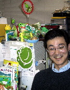
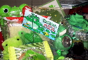
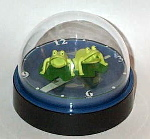
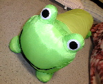
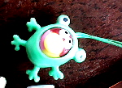

|
カエルオフィスで快適！会社生活！ 【東京発=ぴのこ福岡かえる展事務局長】お仕事関係の知り合いの人の同僚にカエラーがいるとの情報を入手して、東京出張にあわせて会いに行ってきました。会社をカエルだらけにしているその人の名は、桶名傾さんだったのです。机の周りはカエルグッズがいっぱい。すばらしいですねー。さすがです。桶名さんは、「Misakicho Frog Party」という会で事務局長を務めていて、カエル活動をすすめているのです。同じ会社に、その会の財政局長をしている贋さわいけい蛙さんもいましたああああ。カエラーな職場でいつも笑顔でお仕事できますね。
 全社あげてカエル化宣言を！【全国かえる奉賛会】カエルに囲まれていると、このように会心の笑顔が出るのですー。いまこそ職場にカエルを大量に持ち込み、すべての書類スペースをカエルでうめ尽くそうではないかあああ。レポートしてくれた、ぴのこ事務局長の会社机の周辺もカエル満載なのだが、桶名傾さんの机も、なかなかのカエル度である。今週号を見た全国のカエラー諸君！いますぐ重要書類を机の下にたたき捨てて、机の中に忍ばせているカエルグッズのありったけを、日の目の当たる場所に並べようではないかあああああ。
このところ通常の書類に埋もれがちな大王の職場机の上も、桶名さんに習って、カエル度爆発のすばらしい机にすると、心に誓うのであったああああ。全国のみんなも、職場机かえる自慢の投稿を待っているぞおお。
 食料品棚でカエル時計を発見！【広島発=カエルのガーデナー甚六同志記者】初めて投稿します。２月２０日、広島県にある『めがひらスキー場』という所へ行きました。そこの、おみやげ売り場で、かえるグッズ発見！その名も『ハッピードームクロック（カエル）』という時計です。ドーム型の置き時計で、秒針は、お魚が６匹くるくる回ってます。２匹のカエルの口が、１分間に５回ずつ交互に、開いたり閉まったりします。とってもプリティーです。写真を見て！ しかし、なぜ？広島の山奥のスキー場にこんな物が？他には（カエルに限らず）キャラクターグッズは、置いてなかったのに。食料品の置いてある棚に、ひっそりと・・・。私が購入した後、あと１個残ってましたので欲しい方は、是非スキーに行きましょう！
【全国かえる奉賛会】ううーむ。店の人も、分類どうしたものかと思案した挙げ句に、食品と断定したのではないでしょうか。非常に実用度が高い時計なので、そういう意味からも立派な食品かもしれません。
カエル枕で快眠熟睡！ 【かえる掲示板発=カエルライダー同志記者】ホームセンターでダックスフントスタイルのカエル枕発見しました。顔はトロイマー「ケロタン」似です。￥９８０内容的には￥５８０ぐらいでも売ってそうですが。
【全国かえる奉賛会】これは、かなりほしいなー。でも大王は、抱きついて寝るくせがあるので、よだれとかついて、どろどろになりそうだから、予備とともに２つは準備したいところである。
 キョロチャンストラップのカエルかぶりバージョン！【福岡発=ぴのこ福岡かえる展事務局長】キョロチャンのストラップをしているんですが、これって動物の着ぐるみのオプションがあるんですよ。その中にカエルがありました。キョロちゃんにカエル着せている人って珍しいでしょー。
投稿採用者に武功カエル徽章を授与！ |
かえる古新聞過去に取り上げた記事を見出し付きで一覧したい人は、ここをクリック◆創刊号を見る◆先週号を見る◆話題の号を見る◆かえる新聞の昔を読む◆COOL NET FROG RANKING !
|
私も入っています。。全国かえる奉賛会
大王様に会うには、このバナーをクリック。ずっと奥に写真館があるぞ。全国かえる奉賛会に入会するには、自分のホームページのどこかに、下の部分を追加するとバナーがリンク付きで表示されるぞ。どんどん入会しましょー |


|